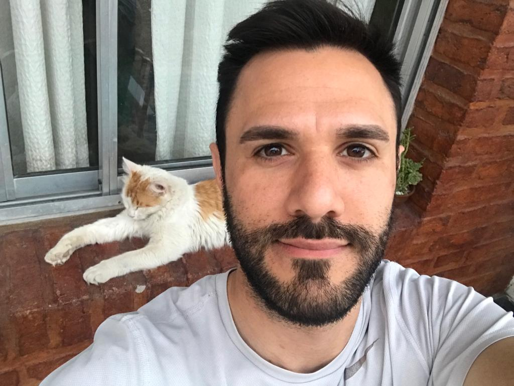

Acerca nuestro
Bienvenido a Patitas Felices. Nuestro objetivo es llevar mascotas
sin hogar a los hogares. Ayudamos a más de 100 refugios de animales,
sociedades humanitarias, grupos de rescate de mascotas y agencias de
adopción de mascotas a anunciar sus mascotas sin hogar a millones de
adoptantes al mes, todo de forma gratuita.
Nuestra misión colectiva
es conectar a los futuros padres de mascotas con la mascota adecuada
para ellos. Pero no nos detenemos ahí, también brindamos información
útil y una gran cantidad de recursos para ayudar a los adoptantes a
tener éxito en su nuevo viaje como padres de mascotas. Consultenos,
también, para obtener asesoramiento sobre todo lo que lo ayudará a
dominar a su mascota, desde tareas pendientes de los padres de
mascotas hasta reseñas de productos y consejos de capacitación.
Nuestro Equipo
Sebastián Gómez
El encantador de mascotas
Leandro Giovannoni
Preparado para manejar el rebaño
Agustina Gonzalez

La doctora de los gatitos y perritos
Guillermo Pascuzzi
Listo para salir al rescate
Nuestros valores
- Empatía
- Hay que entender la situacion de estos seres, debemos estar siempre al rescate de ellos, no pueden quedar abandonados.
- Positividad
- No hay mal que por bien no venga, siempre habra una persona dispuesta a ayudarte.
- Consciencia
- Debemos ser conscientes de que dejar abandonados a nuestras mascotas, habla mal de nosotros.
- Solidaridad
- Solidaridad total con estos animales dejados al abandono.